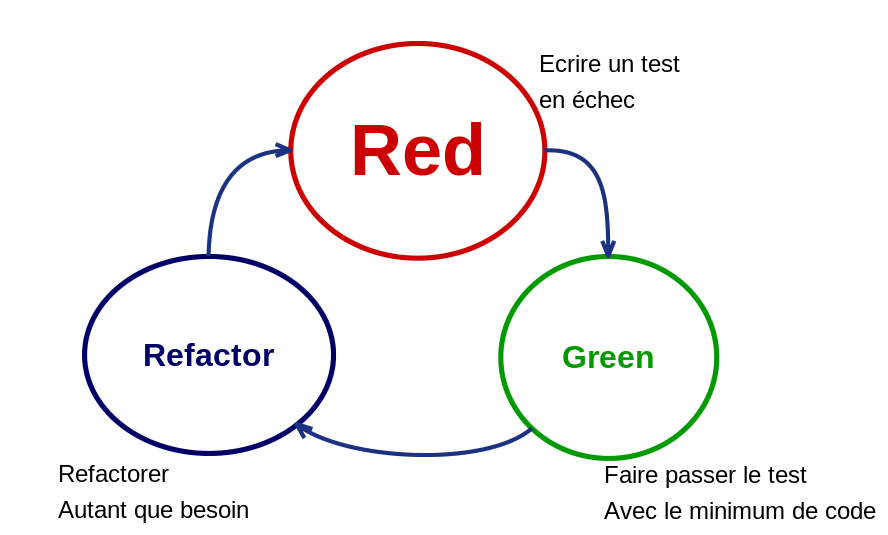

Test d'une unité
- Given // Etat initial
- When // Action
- Then // Vérification
Tests unitaires
public void add_should_sum_several_numbers() {
// Given / Arrange
Calculator calculator = new Calculator();
// When / Act
calculator.add(2);
calculator.add(4);
// Then / Assert
assertThat(calculator.result()).isEqualTo(6);
}
Check List
- Fast
- Isolated
- Repeatable
- Self-checking
- Timely
Test Unitaire = un test
Test Driven Developement = une méthode
Test Driven Developement

Fake
// Test example with fake
// Test example with manual object creation
// Test example with factory
Outils
- Junit
- Mockito
- AssertJ
- ...